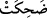

73. (Melekler) dediler ki: “Allah’ın işine mi şaşıyorsun? Ey ev halkı, Allah’ın
rahmeti ve bereketleri sizin üzerinizdedir. Şüphesiz ki O, övülmeye lâyıktır, iyiliği
boldur.”
Melekler Sâre’nin bu tutumunu beğenmeyerek “dediler ki: “Allah’ın işine mi”
Allah’ın iki yaşlıdan çocuk yaratmasından dolayı mı “şaşıyorsun?”
Kâşifî şöyle diyor: Hak Teâlâ’nın işinden dolayı şaşılacak hiçbir şey yoktur. O,
vâsıtasız yaratma ve sebepsiz lütfundan olarak iki ihtiyar arasından çocuk meydana
getirir.
Bir kudret ki kemal üzere olur,
Böyle şeyler nasıl O’ndan muhal olur?
Müftî Sa‘dî şöyle der: “Cebrâil, yerden kuru bir dal alıp parmaklarının arasında
ovuşturunca taptaze bir ağaç oluverdi. Bunu gören Sâre gelen mesajın Allah tarafından
olduğunu anladı.”
et-Te’vîlâtü’n-Necmiyye’de şöyle denilir: “Allah’ın işi”nden maksad Allah Teâlâ’nın
kudreti demektir. Çünkü Allah Teâlâ’nın bir sünneti bir de kudreti vardır. Avâmın işleri
sünnetine göre akıp gider. Havassın işi ise âyet ve mûcize ızhâr etmek için kudretine
göre cereyan eder.
İşte ey İbrâhim-Sâre çifti, sizin işinizi de kudretiyle icrâ etti. İmrân’ın karısı
Hınne’nin durumu da böyledir. Kocakarı oluncaya kadar çocuğu olmayan kısır biriydi.
Sonra Meryem’e hâmile kaldı. Bu konu, Âl-i İmran sûresinde geçmişti. Bu hâmile kalış
Allah’ın kudretiyle gerçekleşen olağanüstü bir durum olduğu için hayız görmeye ihtiyaç
kalmamıştı. Gerçi ihtiyarlıkta da hayız görülmesi uzak bir ihtimal değildir. Nitekim bir
âlim, “
” fiilini “hayız gördü” diye tefsir etmiştir.
Anlatıldığına göre Haccâc, Abdullah b. Zübeyr (r.a.)’ı asınca annesi Hz. Ebû Bekir
(r.a.)’ın kızı Esmâ (r.anhâ) Abdullah’ın cesedinin yanına gelip onu bu halde görünce,
yüz yaşında yaşlı bir hanım olmasına rağmen, hayız görmüş, göğüslerinden süt gelmiş
ve şöyle demiştir: “Abdullah’ın yetiştiği yerler onun hasretini çekiyor; süt emdiği yerler
onun için dolup taşıyor.”
“Ey ev halkı, Allah’ın” her şeyi kuşatan ve bütün hayırlardan önce gelen “rahmeti ve
bereketleri” yani aralarında çocuk vermenin de bulunduğu ve her konuyu ilgilendirecek
kadar çok ve devamlı artan hayırları “sizin üzerinizdedir.” Sizden hiç ayrılmayan,
ayrılmaz özelliklerinizdir.
Elçiler şöyle demek istiyorlar: Bu ve benzeri nimetler, Allah’ın size ikram ettiği ve
sadece size nimet olarak verdiği özelliklerdendir, ey nübüvvet evinin halkı! Bunda
şaşılacak bir şey yok.
Âyette geçen rahmetin peygamberlik, bereketlerin ise İsrâiloğulları’nın boyları (esbât)
olduğu da söylenmiştir. Çünkü peygamberlik hep bunların arasından çıkmıştır ve hepsi
de İbrahim (a.s.)’ın çocuklarıdır. Nûh (a.s.) kıssasında geçen şu ifade de bu âyete